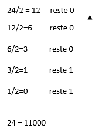
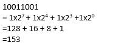

Le binaire est l'origine de tout le numérique.
Calcul :

A l'inverse :

• IP V4
L'IP est une identité donné à la machine lorsque elle est connecté sur internet.
L'adresse est donné au réseau en bit:
192.0.0.4 se note 1100 0001. 0000 0000. 0000 0000. 0000 0100
Fin du cours sur le Binaire. Cliquez ici pour retourner en haut de la page.